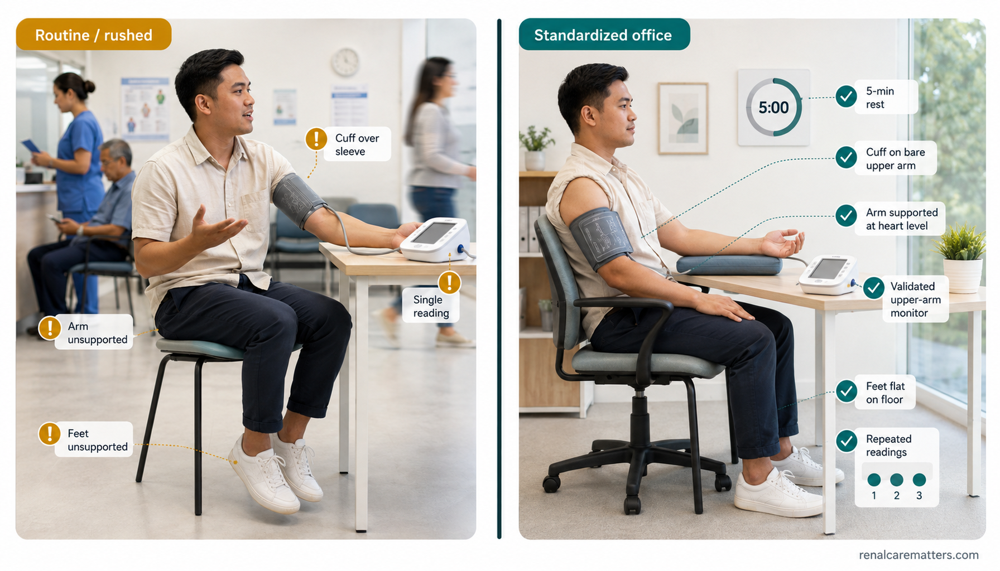
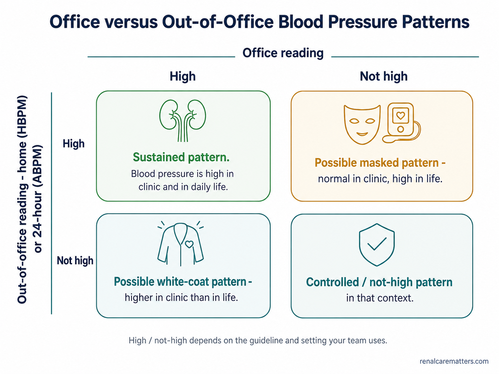
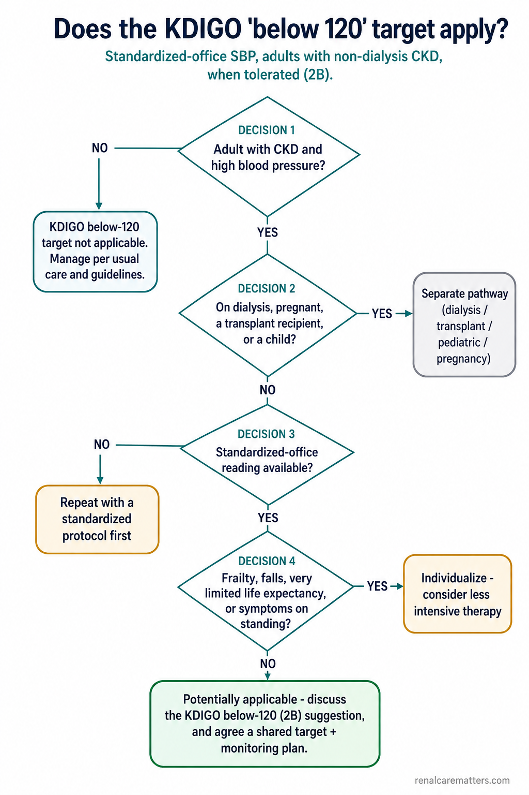
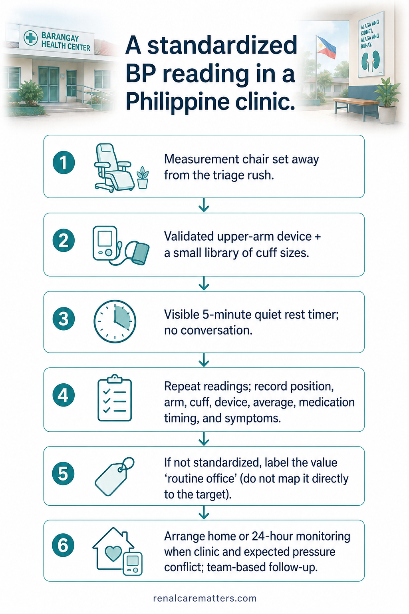
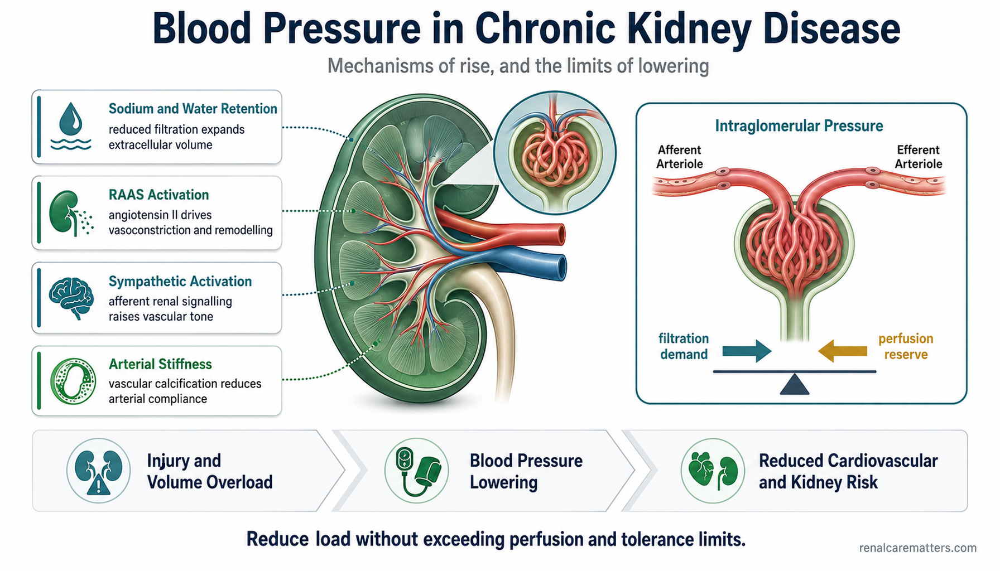

Read this first — safetyBasahin muna ito — kaligtasanBasaha una kini — kaluwasanBasan mu pa ini — katiligtasan
This guide explains what blood-pressure targets in chronic kidney disease (CKD) mean. It does not choose your personal target and does not change your medicines. Never start, stop, skip, double, or change a blood-pressure medicine because of this page — only your own care team can do that. If a very high blood pressure comes with chest pain, severe shortness of breath, new weakness or numbness, confusion, a seizure, or a sudden change in vision, seek emergency care now.Ipinapaliwanag ng gabay na ito kung ano ang ibig sabihin ng mga target ng presyon ng dugo sa chronic kidney disease (CKD). Hindi nito pinipili ang inyong personal na target at hindi nito binabago ang inyong mga gamot. Huwag magsimula, huminto, laktawan, doblehin, o baguhin ang gamot sa presyon dahil sa pahinang ito — ang inyong doktor lamang ang makakagawa niyan. Kung ang napakataas na presyon ay may kasamang pananakit ng dibdib, matinding hirap sa paghinga, bagong panghihina o pamamanhid, pagkalito, kombulsyon, o biglaang pagbabago sa paningin, humingi ng agarang tulong-medikal.Kini nga giya nagpasabot kung unsa ang buot ipasabot sa mga target sa presyon sa dugo sa chronic kidney disease (CKD). Dili kini magpili sa imong personal nga target ug dili mag-usab sa imong mga tambal. Ayaw pagsugod, paghunong, paglaktaw, pagdoble, o pag-usab sa tambal sa presyon tungod niini nga panid — ang imong doktor ra ang makahimo niana. Kung ang taas kaayo nga presyon adunay kauban nga sakit sa dughan, grabe nga kalisod sa pagginhawa, bag-ong kaluya o pamanhid, kalibog, kombulsyon, o kalit nga pagbag-o sa panan-aw, pangita dayon ug emergency nga tabang.Ing giya a ini pepalino na nung nanu ing kabaldugan da reng target da reng presyon ning daya king chronic kidney disease (CKD). E na pipilinan ing personal mung target at e na babayuan la reng gamot mu. E ka magumpisa, tumuknang, lumaktaw, dumuble, o mibayu king gamot king presyon uli ning pisamban a ini — ing doktor mu mu ing malyaring gawa niyan. Nung ing masiadung matas a presyon atin yang kayabe a sakit salu, masakit a pangenawa, bayung kaluyan o pamanhid, kalinguan, kombulsyon, o kaglagli a pamibayu king panlawe, maintun kang agad a saup medikal.
What KDIGO actually says about “below 120”
Kidney Disease: Improving Global Outcomes (KDIGO) suggests a systolic blood pressure (SBP) below 120 mmHg for many adults who have high blood pressure and chronic kidney disease and are not on dialysis — but only when the number is taken with a careful standardized office protocol, and only when the treatment is tolerated. This is a conditional suggestion (graded 2B), not an absolute rule, and it is not automatically your personal target.
One idea to remember
A blood-pressure target cannot be separated from how the blood pressure was measured. A rushed clinic reading, a home monitor, a 24-hour monitor, a dialysis-unit reading, and a smartwatch reading are not interchangeable — and there is no reliable formula to convert one into another. Before asking “is my number below 120?”, ask “was my number even measured the way the target assumes?”
This page helps you make three separate decisions, in this order: (1) Can this reading be trusted and compared with the evidence? (2) Does your situation match the group the recommendation was written for? (3) Is the treatment strategy tolerated and worthwhile for you as an individual? The rest of the guide walks through each one.
“120” is a protocol, not just a number

A rushed triage reading and a standardized office reading can show the same number and still not mean the same thing. The KDIGO target assumes the careful reading on the right.
- SBP
- Systolic blood pressure — the top number.
- KDIGO
- Kidney Disease: Improving Global Outcomes, the nephrology guideline body.
The KDIGO target was written for a standardized office blood pressure — a reading taken under conditions that research studies used, so the number can be fairly compared with what those studies found. In busy real-world clinics, the number often comes from something else entirely: a rushed triage check, a cuff placed over clothing, a dangling arm, a talking patient, or a single measurement. Those readings can be several points too high or, occasionally, misleadingly low.
KDIGO accepts either an attended or an unattended automated office reading — staff presence is not the point. What matters is that the protocol is followed. Here is the standardized-office checklist your care team aims for:
🔒 Everything you tick stays in your browser. Nothing is sent anywhere, saved, or shared.
Four different questions that use four different numbers
Guidelines can seem to disagree because they are often answering different questions. Keeping these four ideas separate dissolves most of the apparent conflict — a guideline can label high blood pressure at one number yet aim treatment at another, and that is not a contradiction.
1 · Definition
At what level do we apply the label “hypertension”?
2 · Treatment threshold
At what level should medicine generally be started or increased?
3 · Treatment target
What achieved number should treatment aim for?
4 · Measurement setting
How and where was the number obtained?
Office, home, and 24-hour readings answer different questions
Each setting has a job. Standardized office blood pressure is what the KDIGO target is anchored to. Home blood pressure monitoring (HBPM) captures many readings during ordinary life and is excellent for tracking. Ambulatory blood pressure monitoring (ABPM) — a 24-hour cuff — shows daytime, night-time, and variability, and can settle confusing cases. A routine office reading can screen but should be repeated correctly before any big decision. And cuffless wearables are not currently suitable for adjusting treatment; the 2025 American Heart Association/American College of Cardiology (AHA/ACC) guideline advises against relying on them until accuracy improves.
| Office reading | Out-of-office reading | What the pattern may mean |
|---|---|---|
| High | High | A sustained-hypertension pattern. |
| High | Not high | A possible white-coat pattern — higher in clinic than in life. |
| Not high | High | A possible masked pattern — normal in clinic but high in life. |
| Not high | Not high | A controlled / not-high pattern in that measurement context. |
“High” and “not high” here mean high or not-high against whichever guideline and setting your team is using — the exact cut-offs differ by source and setting, which is exactly why this table avoids printing one universal number.

Comparing a clinic reading with an out-of-office reading (home or 24-hour) reveals four patterns: sustained, white-coat, masked, and controlled. Which pattern you have changes what the reading means.
- HBPM
- Home blood pressure monitoring.
- ABPM
- Ambulatory (24-hour) blood pressure monitoring.
Does the KDIGO “below 120” target apply to your situation?

The KDIGO below-120 suggestion is for one specific group. Walk down the pathway; several branches route you to a different plan entirely.
Are you an adult with CKD and high blood pressure?
The suggestion is for adults. Children follow a separate pediatric pathway.
Are you on dialysis, pregnant, a transplant recipient, or a child?
If yes, the non-dialysis below-120 suggestion does not apply — your care follows a different set of rules (see Special groups below).
Is a standardized-office reading available?
If not, the first job is to repeat the measurement properly — not to act on a rushed number.
Do you have frailty, falls, very limited life expectancy, or symptoms when standing?
KDIGO 2024 advises considering less intensive treatment in these situations.
Agree a shared target and a monitoring plan
The number is decided with you, alongside how side effects and kidney tests will be watched.
This tool will never tell you “your target is…”
No web page can set your personal target. The builder below lists which guideline pathways are relevant to your situation and the questions to bring to your team — it never outputs a number.
🔒 Your selections stay in your browser. Nothing is stored or sent.
When “lower” may be too low for you
Lowering blood pressure helps the heart and brain, but going too low for you can reduce blood flow and cause symptoms. A safe target is one your body tolerates. Diastolic blood pressure (DBP) — the bottom number — matters too: a very low bottom number with chest or exertion symptoms is a signal to reassess, though a low diastolic is not automatically dangerous on its own. Watch for these:
What to do — and what not to doAno ang gagawin — at hindi gagawinUnsa ang buhaton — ug dili buhatonNanu ing gawan — at e gagawan
Write down the reading, your position, your symptoms, your pulse if you have it, when you last took your medicine, and any recent illness. Contact your care team promptly. Do not change your medicines on your own unless you are following a sick-day or action plan your clinician gave you.Isulat ang reading, ang inyong posisyon, ang mga sintomas, ang pulso kung mayroon, kung kailan huling uminom ng gamot, at anumang kamakailang sakit. Makipag-ugnayan agad sa inyong doktor. Huwag baguhin ang inyong gamot nang mag-isa maliban kung sumusunod kayo sa sick-day o action plan na ibinigay ng inyong doktor.Isulat ang reading, ang imong posisyon, ang mga sintomas, ang pulso kung naa, kanus-a ka kataposang niinom ug tambal, ug bisan unsang bag-ong sakit. Kontaka dayon ang imong doktor. Ayaw usba ang imong tambal nga ikaw ra gawas kung nagsunod ka sa sick-day o action plan nga gihatag sa imong doktor.Isulat me ing reading, ing posisyon mu, deng sintomas, ing pulso nung atin, kapilan meng tauling inginum ing gamot, at nanuman a bayung sakit. Kontak me agad ing doktor mu. E me babayuan ing gamot mu a sarili mu nung ali ka tatuki king sick-day o action plan a bini ning doktor mu.
What the research actually shows
Several large randomized controlled trials (RCTs) tested a lower blood-pressure strategy against a standard one. Read together, they tell a balanced story — real benefits for the heart and brain, real burdens, and honest uncertainty. Clinicians can open the full trial matrix in the clinician view.
Possible benefit
In selected higher-risk adults, aiming lower reduced heart attacks, strokes, heart-failure events, and cardiovascular disease (CVD) deaths in trials such as SPRINT, STEP, ESPRIT, and BPROAD.
Possible burden & harms
Lower targets meant more medicines, visits, and monitoring, and more dizziness, low blood pressure, fainting, electrolyte problems, and short-term kidney-function changes in some trials.
What stays uncertain
Preventing kidney failure is not proven. Evidence is thin for advanced CKD, dialysis, and very frail or institutionalized people — and translating a research number to a routine clinic reading is imperfect.
Benefit for the heart is not the same as benefit for the kidney
Intensive blood-pressure lowering can reduce cardiovascular events in the right people. But KDIGO 2024 states that trials have not shown a meaningful reduction in kidney-failure risk from intensive lowering. It is honest to hold both truths at once.
One more nuance: an early, small dip in kidney function (estimated glomerular filtration rate, or eGFR) after starting or increasing treatment is often a hemodynamic adjustment, not injury — while a large or symptomatic change can be real acute kidney injury (AKI). Telling these apart is a job for your care team, not a home judgment.
Special groups are not footnotes
The below-120 suggestion is for non-dialysis adults with CKD. Several groups need a different plan — here is the short version, with clinician detail and links deeper in the guide.
Diabetes
Older evidence (ACCORD BP) was cautious, but newer trials (BPROAD, ESPRIT) support cardiovascular benefit from lower targets in selected higher-risk adults with type 2 diabetes. The American Diabetes Association (ADA) still keeps a general recommendation of below 130/80. Measurement quality and individual tolerance still decide.
Older adults & frailty
Age is not the same as frailty. Trials such as STEP support benefit in selected older adults, but very frail, severely orthostatic, or nursing-home residents were under-represented. “Older adults should just have a higher target” is not a universal rule — it is an individual judgment.
Advanced CKD
Direct evidence is thin and the risks of electrolyte problems and kidney-function changes are higher, so monitoring must be closer. Note that ESPRIT excluded people with an eGFR below 45, and SPRINT included few with advanced or heavily proteinuric CKD.
Dialysis
The KDIGO non-dialysis below-120 target does not transfer to dialysis. Fluid gained between sessions, ultrafiltration, and symptoms during treatment make dialysis blood pressure a different animal; home or between-session readings often tell more than a single pre- or post-dialysis number.
Kidney transplant
KDIGO offers a standardized-office target of below 130/80 as a Practice Point for adult transplant recipients — the below-120 target is not inherited.
Children
Children use age-, sex-, and height-based targets, ideally from 24-hour monitoring, and belong with pediatric nephrology. Adult calculators and the below-120 pathway do not apply.
Pregnancy
Pregnancy is out of scope for this page. Blood-pressure changes in pregnancy need urgent obstetric and kidney care — do not use the CKD below-120 pathway.
A practical Philippine clinic workflow

A standardized reading is achievable even in a busy barangay health center — it needs a quiet chair, a timer, a validated cuff, and a habit of recording the conditions.
Local context
The 2020 Philippine guideline defines office hypertension at 140/90 mmHg or higher and recommends a general treated target of below 130/80. PRESYON-5 (2026), using a structured protocol, reported adult hypertension prevalence of roughly 34% at 140/90 or higher, with only about a quarter below 130/80. PRESYON-5 is local epidemiology — a picture of the population — not a validation of the KDIGO CKD target. The World Health Organization (WHO) HEARTS package and its validated-device lists support standardized measurement in exactly these settings.
Questions to take to your next visit
Print or screenshot this list. Good questions get you a target that fits your body and your life.
- Was today’s blood pressure measured with a standardized protocol?
- Are we using office, home, or 24-hour readings to make this decision?
- Which guideline and which measurement setting define my target?
- Does my CKD stage, albuminuria, diabetes, transplant, or dialysis status change the plan?
- Which symptoms or readings should make me call you?
- When should my creatinine, eGFR, and potassium be checked after a medicine change?
- What is the plan if I get dehydrated or acutely ill (a sick-day plan)?
- When will we reassess the benefit, the side effects, and the treatment burden?
Take the protocol and the log with you
Use the standardized checklist above to prepare, then bring a clean, well-kept log to your visit. These printable logs live in the library — label your readings as home readings, never as standardized-office readings.
Frequently asked questions
Mechanism to decision
Hypertension in CKD is multifactorial: impaired sodium excretion and pressure natriuresis expand volume; the renin–angiotensin–aldosterone system (RAAS) and sympathetic activation raise systemic resistance; and endothelial dysfunction with arterial stiffness lifts systolic pressure and widens pulse pressure, driving left ventricular hypertrophy (LVH) and microvascular injury in heart, brain, and kidney.

In CKD, the kidney retains sodium and water and the RAAS and sympathetic systems tighten vessels, while stiff arteries raise systolic pressure. Lowering pressure eases cardiovascular load — but too much for an individual reduces perfusion and causes symptoms.
- RAAS
- Renin–angiotensin–aldosterone system.
- SBP
- Systolic blood pressure.
- eGFR
- Estimated glomerular filtration rate.
At the glomerulus, systemic pressure is only part of the story. Intraglomerular pressure — modulated by afferent and efferent tone — determines albuminuria and, over time, sclerosis. RAAS blockade (an angiotensin-converting enzyme inhibitor, or ACE inhibitor, or an angiotensin receptor blocker, ARB) lowers intraglomerular pressure and reduces the urine albumin-to-creatinine ratio (UACR); a resulting early drop in the estimated glomerular filtration rate is usually a hemodynamic effect, not structural acute kidney injury. Chronic hypertension shifts the autoregulatory curve rightward, so the perfusion floor is higher than in a normotensive kidney — part of why over-rapid lowering can transiently reduce filtration.
Two safety corollaries follow. First, coronary perfusion occurs largely in diastole; with a stiff aorta and wide pulse pressure, an aggressively lowered diastolic blood pressure (DBP) may matter in patients with ischemic symptoms — though observational J-curve data are confounded by reverse causation and cannot set a universal diastolic floor. Second, baroreflex failure and autonomic neuropathy predispose to orthostatic hypotension, and peripheral arterial disease (PAD) complicates limb pressures. In dialysis, cyclic interdialytic volume accumulation and ultrafiltration (UF) make peridialytic pressure a distinct phenotype. The unifying rule: benefit depends on reducing cardiovascular load without exceeding an individual’s perfusion and tolerance limits.
Guideline comparison matrix
Do not imply a hierarchy across different populations — these sources answer different questions for different groups: KDIGO, the Philippine guideline, AHA/ACC, the European Society of Cardiology (ESC), and ADA. Each is labeled with its evidence type.
| Source | Population & measurement | Target / position | Required interpretation |
|---|---|---|---|
| KDIGO 2024 CKD 2B | Adults, high BP + CKD; standardized office; non-dialysis (inherited from KDIGO 2021) | SBP <120 mmHg, when tolerated | Conditional, measurement-bound, individualized. Consider less intensive therapy with frailty, falls/fracture risk, very limited life expectancy, or symptomatic postural hypotension. RCTs have not shown meaningful kidney-failure reduction. |
| Philippine 2020 CPG PH | Adult Filipinos; proper office measurement; out-of-office confirmation encouraged | Hypertension defined at office ≥140/90; general treated target <130/80 | Definition ≠ target. Predates BPROAD, ESPRIT, AHA/ACC 2025, and ADA 2026; label its version date. Remains the current national CPG. |
| AHA/ACC 2025 Guideline | Adults; accurate standardized measurement + out-of-office integration | Overarching goal <130/80 with exceptions | A broad adult goal, not a conversion of the KDIGO standardized SBP target. CKD is a risk-enhancing condition. Advises against cuffless devices for titration. |
| ESC 2024 Guideline | Most adults on BP-lowering therapy | SBP 120–129 if tolerated | A target range with an opt-out for intolerance/frailty. Measurement and population context still apply. |
| ADA 2026 Guideline | People with diabetes, incl. CKD risk management | <130/80 | Individualize; incorporates BPROAD but does not replace its goal with a universal SBP <120. |
| KDIGO transplant Practice point | Adult transplant recipients; standardized office | <130/80 | Do not inherit the non-transplant <120 target. |
| KDIGO pediatric CKD 2C | Children; ABPM preferred | 24-h mean arterial pressure ≤50th percentile; if no ABPM, standardized office SBP ~50th–75th percentile | Age-, sex-, and height-specific; a separate pediatric pathway. |
| Dialysis Evidence gap | Maintenance hemodialysis (HD) or peritoneal dialysis (PD) | No validated universal target | Pre/post-dialysis readings and the non-dialysis <120 target must not be applied as a universal algorithm. Volume, interdialytic BP, symptoms, and modality matter. |
Landmark trial matrix
Balance benefit, harm, and applicability — not headline hazard ratios alone. Before publication, verify every sample size, endpoint, hazard ratio, confidence interval, achieved BP, and adverse-event description against the primary papers.
| Study | Population & comparison | Main signal | Limits for CKD target decisions |
|---|---|---|---|
| SPRINT (2015) RCT | 9,361 high-CV-risk adults without diabetes; SBP <120 vs <140 | Primary CV composite HR 0.75 (95% CI 0.64–0.89); lower all-cause mortality. More hypotension, syncope, electrolyte abnormalities, and AKI. | Key basis for KDIGO. Excluded diabetes, prior stroke, nursing-home residents. Research-protocol measurement; mean achieved intensive SBP ~121. |
| SPRINT CKD subgroup Subgroup | Prespecified CKD subgroup, largely moderate CKD | CV benefit consistent with overall trial; kidney-failure benefit not established | Limited advanced/proteinuric CKD; CV rather than proven end-stage kidney disease (ESKD) prevention. |
| ACCORD BP (2010) RCT | 4,733 adults with type 2 diabetes; <120 vs <140 | Primary composite not significantly reduced; stroke reduced; more treatment-related serious adverse events | Underpowered; factorial design complicates interpretation. Read beside BPROAD, not alone. |
| STEP (2021) RCT | 8,511 Chinese adults 60–80; 110–<130 vs 130–<150 | Lower primary CV outcome with intensive strategy; more hypotension | Older adults, but eligibility excludes many frail/orthostatic/advanced-CKD patients. Target was a range, not <120. |
| ESPRIT (2024) RCT | 11,255 Chinese adults ≥50 high CV risk; <120 vs <140; incl. diabetes and prior stroke | Major vascular events lower (HR ~0.88); more syncope | Excluded standing SBP <110 and eGFR <45 → weak direct evidence for advanced CKD/orthostasis. Kidney composite more frequent in intensive arm; discuss in balance. |
| BPROAD (2025) RCT | 12,821 adults ≥50 with type 2 diabetes and increased CV risk; <120 vs <140 | Major CV composite HR 0.79 (95% CI 0.69–0.90); overall SAEs similar, but more symptomatic hypotension and hyperkalemia | Conducted in China; achieved mean SBP ~121.6 at 1 year. Supports CV benefit in selected diabetes populations; does not make <120 an automatic CKD target. |
| MDRD / AASK & follow-up Synthesis | CKD populations, including proteinuric disease | Kidney benefit of lower BP more plausible with greater proteinuria; universal ESKD prevention unproven | Older targets/methods. Use to explain albuminuria as an effect modifier, not to manufacture a universal number. |
Interpretation, in five lines
BPROAD and ESPRIT strengthen the cardiovascular case for intensive lowering in selected high-risk adults, including many with diabetes. They do not remove the need for standardized measurement, eligibility, tolerability, and monitoring. Intensive control is a strategy — repeated measurement, titration, surveillance, and de-intensification when harms emerge — not merely a number. Present relative risk with baseline/absolute risk where available. Trial exclusions are clinically meaningful and must stay visible.
Special populations — clinician detail
| Population | Key points |
|---|---|
| Diabetes | Contrast ACCORD BP with BPROAD and ESPRIT. Newer trials support CV benefit in selected high-risk adults with diabetes; ADA 2026 retains <130/80 as the general recommendation. Individualization and measurement fidelity remain necessary; monitor potassium and orthostasis. |
| Older adults / frailty | Separate chronological age from frailty. SPRINT-Senior and STEP support benefit in selected older adults; nursing-home residents, severe orthostasis, and high-risk frailty are under-represented. Avoid a universal “higher target for the old” rule; assess gait, falls, and standing BP. |
| Advanced CKD | Thin direct evidence; greater electrolyte/AKI risk; closer surveillance. ESPRIT excluded eGFR <45; SPRINT advanced/proteinuric representation limited. Check electrolytes and creatinine after clinically relevant titration. |
| Dialysis | The KDIGO non-dialysis SBP <120 target does not transfer to dialysis. Weigh interdialytic volume, UF, intradialytic symptoms; home/interdialytic or ambulatory patterns often outperform isolated pre/post-dialysis readings. |
| Kidney transplant | Standardized-office <130/80 Practice Point; do not inherit <120. Watch calcineurin-inhibitor interactions. |
| Children | ABPM percentile-based targets; refer to pediatric nephrology; do not reuse adult calculators. |
| Pregnancy | Out of scope; route to obstetric/renal pathways. Do not display the CKD <120 pathway. |
Individualization, monitoring & documentation
Two tools intentionally not auto-enabled
An office/home pattern classifier and an orthostatic threshold tool require versioned, clinician-verified thresholds and clinical review before they can classify safely. Rather than ship un-verified cut-offs, this guide presents the phenotype table and the orthostatic criterion descriptively and defers automated classification — consistent with the measurement-first discipline of the page. Never infer a home threshold by subtracting a fixed value from an office reading.
Evidence methods, review, and update schedule
Evidence reviewed through 9 August 2026. Sources are primary guidelines and randomized trials, cited in full in the References below. Each consequential claim is tied to its evidence type (KDIGO graded recommendation, KDIGO Practice Point, randomized trial, systematic review, other guideline, conference consensus, Philippine implementation note, or an explicit evidence gap). “KDIGO recommends” is reserved for graded recommendations; Practice Points are described as “KDIGO advises in a Practice Point.”
Next scheduled review: within 6 months for any guideline or trial change, and a full clinical review annually. Immediate-update triggers include a new KDIGO blood-pressure guideline or focused update, an updated Philippine hypertension CPG, a new dialysis blood-pressure trial or KDIGO dialysis guideline, a new AHA/ACC, ESC, or ADA target, a major meta-analysis materially changing the CKD benefit/harm balance, a change in cuffless-device recommendations, or an identified translation or tool-safety defect.
Review status
This is educational decision support authored by W Rivero, MD, FPCP, DPSN. Per the blueprint’s governance, patient-facing translations (Tagalog, Cebuano, Kapampangan) and the special-population panels warrant confirmation by qualified nephrology, hypertension/primary-care, dialysis, patient-language, and clinical-language reviewers before the page is treated as fully reviewed. Displayed trial numbers should be verified against the primary papers at review.